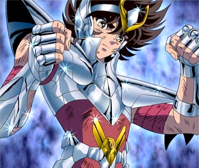
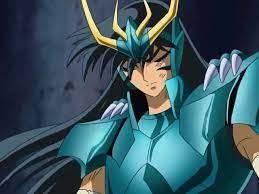
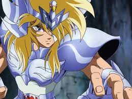
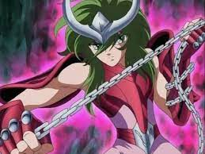
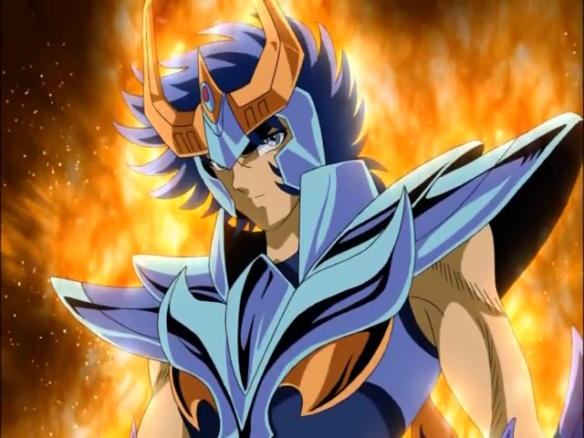
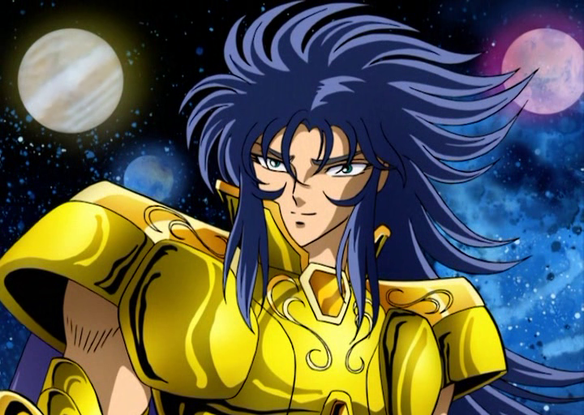
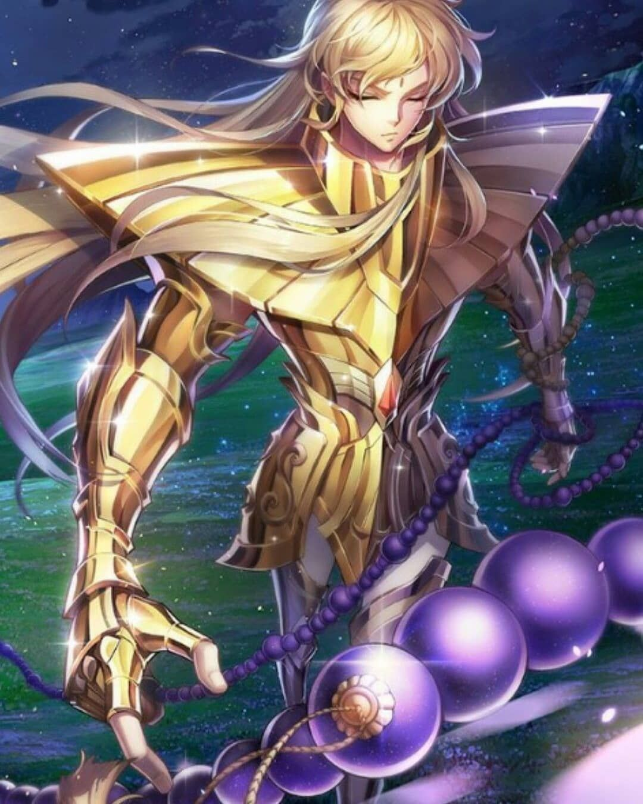
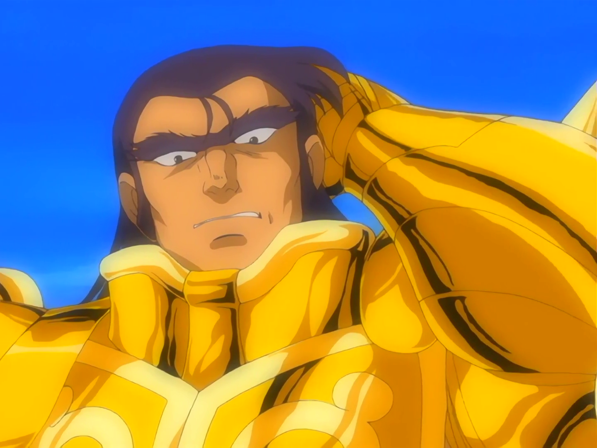

Início
Dúvidas
Os Personagens
Curiosidades
Surpresa
Seja Bem-Vindo! aqui abordaremos alguns tópicos sobre Saint Seiya
Aqui mostrarei os melhores personagens
Seiya de Pégaso

Shiryu de Dragão

Hyoga de Cisne

Shun de Andrômeda

Ikki de Fênix

Saga de Gêmeos

Shaka de Virgem

E claro o melhor de todos o brasileirão Aldebaran de Touro
